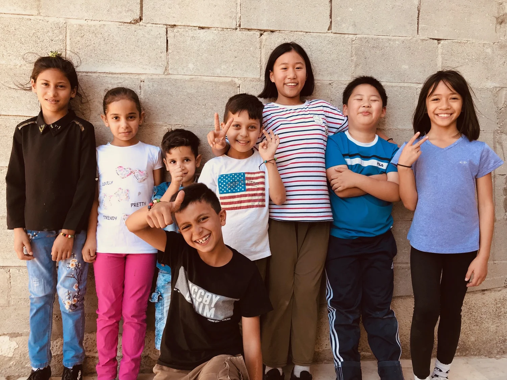

REGISTER NOW FOR FALL 2025 VISION SCHOOL!
🇺🇸 Kids Vision School (US) registration link:
https://intercpkids.churchcenter.com/registrations/events/2936082
🇨🇦 Kids Vision School (Canada) registration link:
https://intercpkids.churchcenter.com/registrations/events/2926752
Kids Vision School is an 8-week mission training program engages children, 1st through 6th grade, in learning about the 10/40 Window and unreached people groups. Each week of KVS consists of worship, lecture, media clips, small groups, and activities/ games, all designed to show the kids how they can participate in the fulfillment of the Great Commission.
Kids Vision School also includes a camp, during which the kids learn more deeply about the Holy Spirit and prayer. When possible, KVS from various regions gather together for this encounter camp to seek to encounter God.
KVS curriculum also includes city ministry. City ministry encourages the kids to go out and preach the gospel. Through sharing the gospel, children learn to rely on God and His strength and experience the power of the gospel in their lives.
Once children graduate from Kids Vision School, they have the opportunity to go out to the unreached nations to preach the gospel. Every summer and winter, kids go out to different nations and serve the people through evangelization, city ministry, English camps, homestay, church ministry, etc.
Once the children are trained and equipped, now it’s their turn to go to the field God has called them to be in: SCHOOLS! Through IBTJ, the children share the gospel and God’s vision to their friends to make disciples of Jesus Christ.
Every summer, InterCP International North America hosts its annual mission conference for all generations, including kids! The kids have their own program, during which they hear messages and testimonies from field missionaries about how God is working in the unreached nations and how Kingdom Kids are partaking in this gospel movement.
For more information, email us at northamerica@intercp.org.
